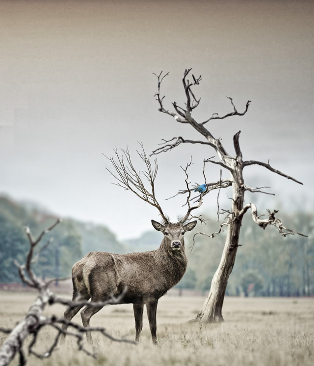
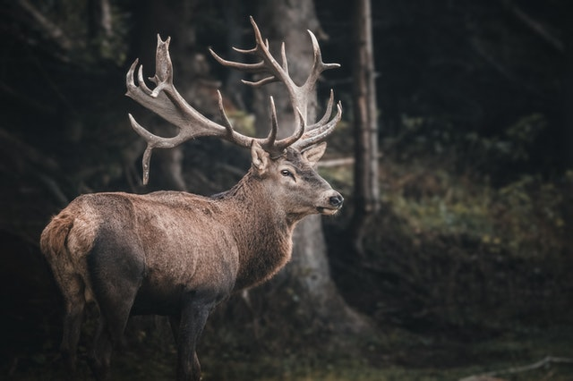
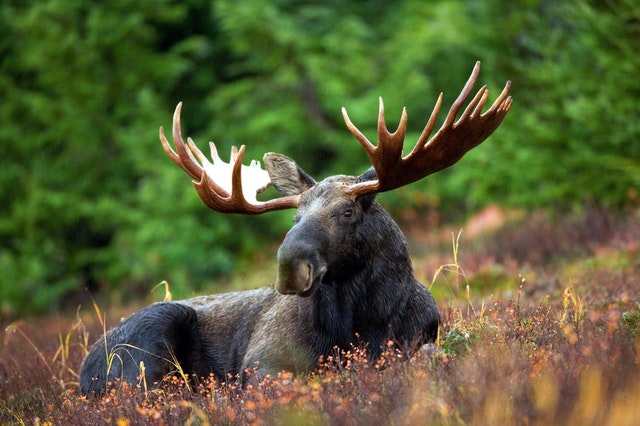
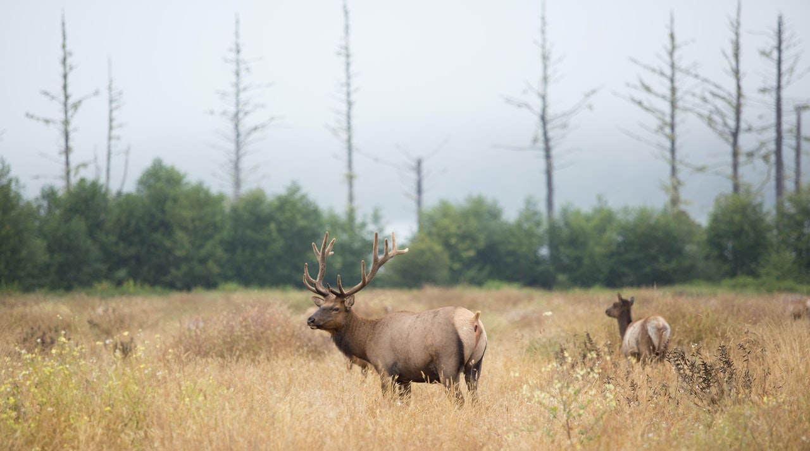

Cervo
da família cervidaeO cervo, ou veado, é o único animal que desenvolve galhadas. Ele é um mamífero com cascos que pertence à família dos cervídeos. Existem cerca de trinta espécies, ou tipos, de cervos. Entre eles estão o veado-campeiro, o cervo-do-pantanal (ou veado-galheiro), o alce, o uapiti e a rena (ou caribu).
O aspeto mais chamativo de diferenciação entre machos e fêmeas é a presença nos machos das galhadas.
A galhada trata-se de estruturas ósseas ramificadas que crescem todos os anos no alto da cabeça dos machos, caindo após a época da reprodução a cada ano cresce mais e ganha mais ramificações, de maneira que os machos mais velhos têm galhadas mais exuberantes.
Os cervos comem apenas plantas, como liquens, ramos e cascas de árvores. Eles mastigam a comida, engolem-na e depois a trazem de volta do estômago em forma de massa. Após ruminar (mastigar de novo) essa massa, eles voltam a engoli-la.
"Penso que um cervo com coragem de enfrentar um leão é mais "respeitado" do que um exercito inteiro de leões".
- Chifres: Possuem de 8 a 12 pontas
- Tipo: Mamífero
- Idade Média: 13 anos
- Macho Adulto: 350kg
- Fêmea Adulta: 150kg
- Altura: 2,10 metros
Desde a Antiguidade, as pessoas costumam caçar cervos por causa de sua carne, do couro e da galhada. Caçar cervos é também um passatempo popular nos Estados Unidos e em muitos outros lugares. Em alguns lugares, as pessoas também caçam para controlar a população de certas espécies. No Brasil a caça a animais silvestres é proibida por lei.
